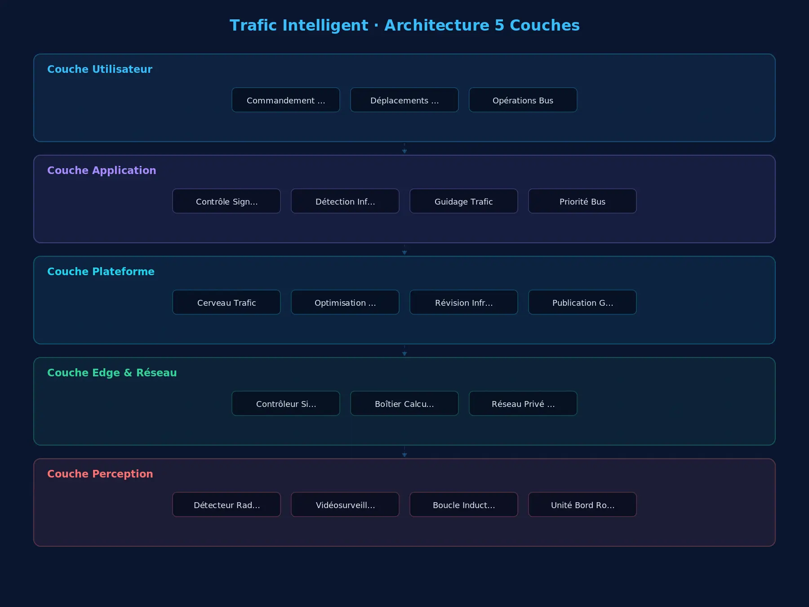

Fournit aux services de gestion du trafic urbain et aux maîtres d'ouvrage une solution intelligente couvrant régulation des feux, vidéosurveillance, détection des infractions, analyse des flux et publication de guidage, répondant à la congestion, aux infractions fréquentes et aux données sous-exploitées, et améliorant capacité routière et sécurité.
核心能力
Contrôle de la signalisation
Compatible avec les principales marques de contrôleurs de feux nationales et internationales, avec réglage des plans à distance.
Analyse vidéo IA
Détection de flux et d'infractions sans boucle de voirie — des chantiers courts.
Détection d'infractions
Capture et preuve automatiques des feux rouges brûlés, excès de vitesse et contresens.
Diffusion de guidage
Infos routières publiées en temps réel via écrans de guidage et interfaces ouvertes.
Priorité bus
La détection des bus allonge automatiquement le vert, améliorant la ponctualité.
方案架构

Études de cas
Projet du Pôle d'Échange Multimodal Mile 2
Contexte :Projet de construction du Pôle d'Échange Multimodal Mile 2 à Lagos, Nigeria.
Projet de la Ligne Bleue du Tramway de Lagos Phase V
Contexte :Projet de la Ligne Bleue du Tramway de Lagos Phase V à Lagos, Nigeria.
Projet de la Gare Ferroviaire de Kano
Contexte :Projet de construction de la Gare Ferroviaire de Kano au Nigeria.